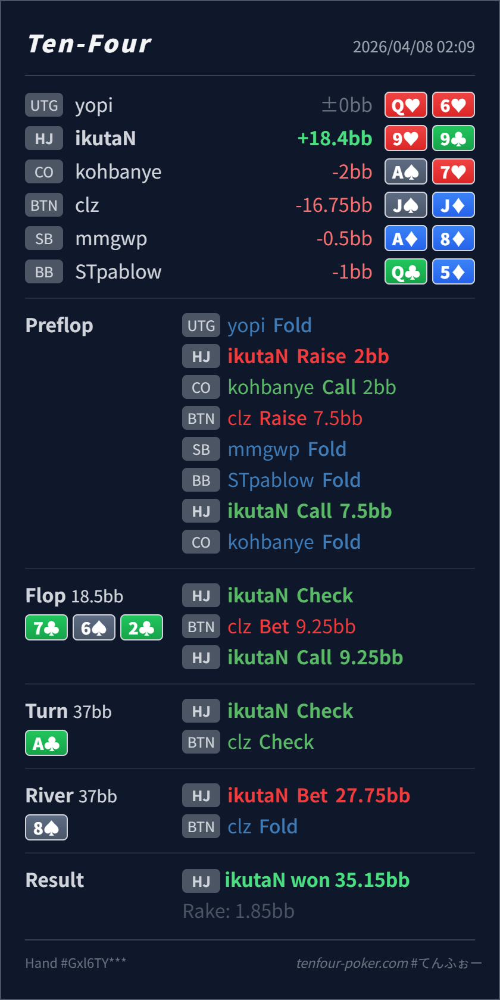

Preflop
良い99 は HJ open-call range の中で十分上位の continue 候補で、set / overpair 系の board coverage もあります。
主論点は、BTN の squeeze pot で A♣ turn の check-back にどんなレンジが残り、river で HJ がどこまで lead range を持てるか、その中で 9♥9♣ がどこに入るかです。結論は、preflop の continue、flop の check-call、turn の check はかなり自然で、いちばん見直すなら river の combo 選択です。lead の発想自体は良いですが、9♣ を持つ 99 は理論上はやや check 寄りです。
9♥9♣J♠J♦7♣ 6♠ 2♣ / A♣ / 8♠A♣ turn を BTN が check-back すると、range は KK-TT、clubless broadway、一部の trap や弱め club にかなり寄ります。HJ は flush や set と一緒に river lead を持てます。9♥9♣ は medium showdown value があり、さらに 9♣ が missed club の fold 側を少し block します。理論では最優先 bluff ではなく、exploit で TT/JJ/QQ がよく降りるなら前向きに使える combo です。9♥9♣J♠J♦2BB, CO call 2BB, BTN raise 7.5BB, HJ call, CO fold7♣ 6♠ 2♣ / A♣ / 8♠9.25BB, HJ call27.75BB, BTN foldJ♠J♦ fold
良い99 は HJ open-call range の中で十分上位の continue 候補で、set / overpair 系の board coverage もあります。
7♣ 6♠ 2♣良い99 は相手レンジに対して overpair で、check-call の強い中核に入ります。
A♣良い99 は medium showdown value を持つので、ここで無理に lead せず check に回すのが自然です。
8♠やや際どい
HJ は flush / set を value に置きつつ bluff lead を持てますが、9♥9♣ はその中ではやや showdown 寄りです。
| 論点 | その場で起きがちな見え方 | どこがズレたか | 次回の基準 |
|---|---|---|---|
river の 99 lead | turn が check-check で終わったので、相手はかなり弱く何でも大きく打ちたくなる | BTN range の cap 自体はかなり正しく見えています。ただ 99 は check で勝てる高カード give-up も残し、9♣ で missed club の fold 側も少し減らします。lead するなら、もう少し no-showdown 寄りで unblock がきれいな combo が先です。 | turn check-check 後は value lead / check showdown / bluff lead を分け、medium pair + fold blocker はまず check 寄りから考える |
| turn check-back の受け取り方 | A♣ で相手が完全 give-up したように見える | 実際には strong Ax や強い club は減る一方、KK-TT や一部 trap は十分残ります。river lead は持てますが、相手 range を空気寄りに見すぎると bluff が広がりすぎます。 | check-back = cap はしたが bluff-catch は残る と整理して、こちらの combo 選択まで一段細かく詰める |
| ストリート | その時点の見え方 | 判断の軸 | 評価 | コメント |
|---|---|---|---|---|
| Preflop | BTN の squeeze range は、dead money を拾えるぶん TT+, AQ+, suited broadway を厚く含む強い線です。 | 99 は HJ open-call range の中で十分上位の continue 候補で、set / overpair 系の board coverage もあります。 | 良い | この call はかなり自然です。 |
Flop 7♣ 6♠ 2♣ | HJ caller 側は set や middle pair を多く持ち、BTN 側は overpair と club overcard が主軸です。 | 99 は相手レンジに対して overpair で、check-call の強い中核に入ります。 | 良い | 9.25BB に対する check-call は素直で問題ありません。 |
Turn A♣ | card 自体は BTN range に有利ですが、check-back で AK/AQ の一部、強い club、強い value がかなり減ります。一方で KK-TT や clubless broadway は厚く残ります。 | 99 は medium showdown value を持つので、ここで無理に lead せず check に回すのが自然です。 | 良い | この check は落ち着いています。まずは相手 range の cap を受け取る street です。 |
River 8♠ | BTN の turn check-back range はまだ KK-TT, QJ/KQ, 一部 trap を含む capped だが bluff-catch 可能な塊です。 | HJ は flush / set を value に置きつつ bluff lead を持てますが、9♥9♣ はその中ではやや showdown 寄りです。 | やや際どい | lead の発想は良いです。ただ、理論寄りにはもう少し no-showdown で unblock がきれいな combo が先です。 |
99 は、相手レンジに対する強い check-call bucket として扱ってよいです。check-back は、相手が完全に降りた合図ではなく、cap はしたが bluff-catch は残る と見ると river の精度が上がります。showdown value が薄く、fold 側を block しにくい combo から入れるとぶれにくいです。A♣ turn の check-back 後に OOP から大きく lead すると、pool が TT/JJ/QQ を理論以上に降ろすなら今回の line はかなり機能します。99 のような medium pair より no-showdown 寄り combo を先に回す方が安定します。